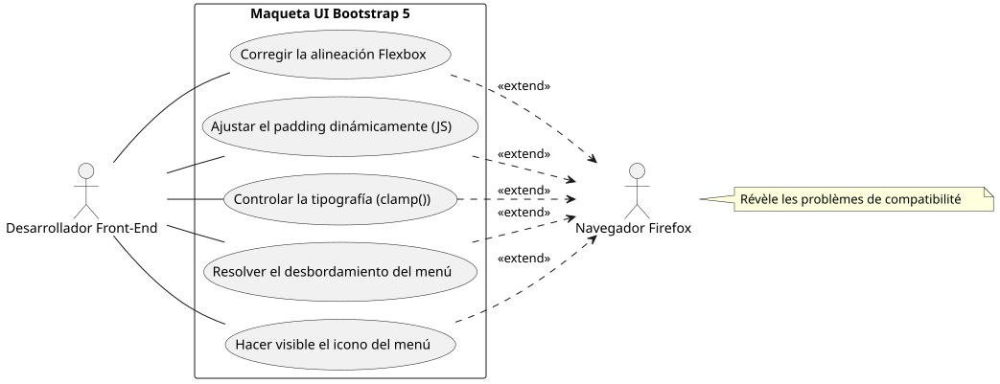
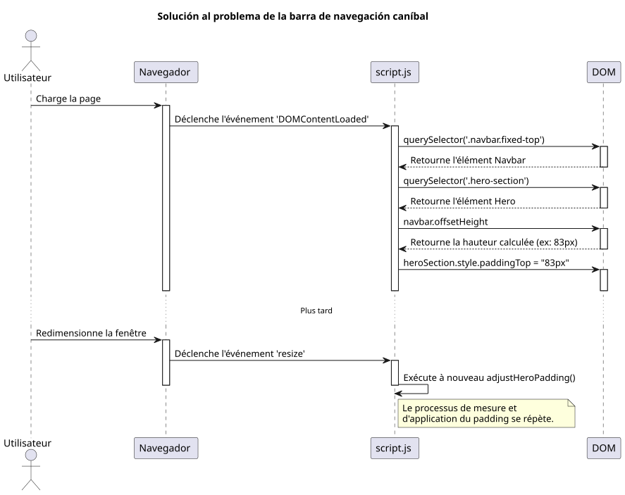
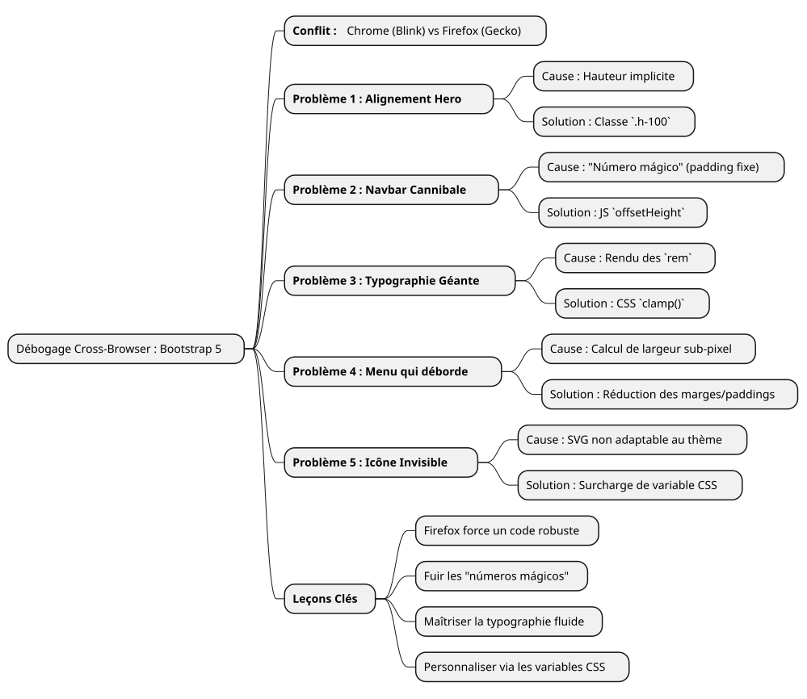

Historia de una depuración: domar los caprichos de Firefox con Bootstrap 5
Publié le 14 July 2025
- El campo de batalla: una maqueta, tres navegadores, renderizados múltiples
- Problema 1: La tarjeta volante de la sección "Hero
- Problema 2 : La barra de navegación caníbal
- Problema 3 : La tipografía anárquica
- Problema 4: La barra de navegación que se desborda
- Problema 5: El menú hamburguesa invisible
- Conclusión: las lecciones de una depuración tenaz
|
Tiempo de lectura: aproximadamente 7 minutos Nivel : Intermedio |
En este caso práctico detallado, vamos a desglosar los problemas de compatibilidad de navegador más comunes y a veces más frustrantes encontrados al crear una maqueta UI con Bootstrap 5.2. Desde la gestión de Flexbox hasta la sutileza del renderizado de fuentes, descubre nuestro recorrido de depuración para transformar un diseño inestable bajo Firefox en una experiencia pixel-perfect en todos los navegadores.
El campo de batalla: una maqueta, tres navegadores, renderizados múltiples
Todo desarrollador front-end conoce esa sensación. Después de horas de trabajo, la maqueta está finalmente perfecta. Los alineaciones son nítidos, la tipografía es elegante, las animaciones son fluidas. Suelta un suspiro de satisfacción, admira su trabajo en Chrome (o Brave, o Edge), y luego, por precaución, abre el proyecto en Firefox. Y ahí, viene el drama. Elementos que se desbordan, alineaciones rotos, tipografías con tamaños caóticos… la hermosa armonía se ha ido.
Es precisamente el escenario al que nos enfrentamos al desarrollar una nueva interfaz de portafolio. El pliego de condiciones era simple: una página de inicio moderna, responsive, con un selector de temas (claro, oscuro y de alto contraste), utilizando vanilla JavaScript y la última versión de Bootstrap 5.2.
Este artículo no es una lista de soluciones milagrosas. Es el registro de nuestra sesión de depuración, una inmersión en el "porqué" de las diferencias de renderizado entre los motores Blink (Chromium, Brave) y Gecko (Firefox), y la demostración de que las soluciones robustas y modernas siempre valen mejor que los parches apresurados.

Problema 1: La tarjeta volante de la sección "Hero
El primer error también era el más visible. La sección de inicio ("hero") está compuesta de dos columnas: a la izquierda, el título principal; a la derecha, una tarjeta de presentación.
-
El síntoma:En Chrome y Brave, las dos columnas estaban perfectamente centradas verticalmente. En Firefox, la tarjeta de la derecha caía inexplicablemente debajo del texto de la izquierda.
-
La investigación:El código HTML parecía, sin embargo, sencillo y correcto, utilizando las clases estándar de Bootstrap.
<section id="home" class="hero-section">
<div class="container">
<!-- Cette ligne est la clé du problème -->
<div class="row align-items-center min-vh-100">
<div class="col-lg-6">
<!-- Contenu de gauche -->
</div>
<div class="col-lg-6">
<!-- Carte de droite -->
</div>
</div>
</div>
</section>Nuestro CSS personalizado para`.hero-section`definía`display: flex` et align-items: center, y la clase`min-vh-100`daba una altura mínima a la línea (div.row). Entonces, ¿por qué Firefox se negaba a centrar las columnas?
-
La causa profunda:Es un ejemplo típico de la manera en que los motores de renderizado interpretan las alturas implícitas. La`<section>`tenía una`min-height`, pero no`height`explícito. Para aplicar`align-items-center`dentro de`div.row`, Firefox necesita conocer la altura de referencia de este contenedor. Como sus padres (
div.containeret la `<section>`ella misma) no tenían alturaestricta, Firefox estaba perdido. El motor Blink, más permisivo, logra "adivinar" la intención y centrar los elementos. Gecko, más fiel a la especificación, no lo hace. -
La solución:Hacer explícita la altura. Hemos forzado el`.container` et le `.row`a ocupar el 100% de la altura de su padre respectivo utilizando la clase utilitaria`h-100`de Bootstrap.
<section id="home" class="hero-section">
<div class="container h-100">
<div class="row align-items-center min-vh-100 h-100">
<!-- ... -->
</div>
</div>
</section>|
Cuando un`align-items`Flexbox no funciona como se espera en el eje vertical, siempre verifique que el contenedor tenga una altura`height` ou |
Problema 2 : La barra de navegación caníbal
-
El síntoma : Le `padding`era suficiente en Chrome, pero no en Firefox, donde el título estaba siempre parcialmente oculto.
-
La causa profunda:El uso de un "número mágico" (
80px) es una muy mala práctica. La altura de un elemento como una barra de navegación puede variar de unos pocos píxeles de un navegador a otro debido a diferencias sutiles en el renderizado de las fuentes, los espacios o incluso las opciones del usuario. Confiar en un valor fijo es la receta para un diseño frágil. -
La solución :Una solución dinámica e infalible en JavaScript. Hemos escrito un pequeño script para:
-
Medir la altura real de la barra de navegación después del renderizado de la página.
-
Aplicar esta altura medida como`padding-top`a la sección "Hero".
-
Vuelve a ejecutar esta función cada vez que se redimensione la ventana para adaptarse a los cambios (como pasar al menú hamburguesa).
document.addEventListener('DOMContentLoaded', function() {
function adjustHeroPadding() {
const navbar = document.querySelector('.navbar.fixed-top');
const heroSection = document.querySelector('.hero-section');
if (navbar && heroSection) {
const navbarHeight = navbar.offsetHeight;
heroSection.style.paddingTop = navbarHeight + 'px';
}
}
// Ajuster au chargement et au redimensionnement
adjustHeroPadding();
window.addEventListener('resize', adjustHeroPadding);
});
En paralelo, por supuesto, hemos eliminado la regla`padding-top: 80px;`de nuestro archivo`styles.css`.
Problema 3 : La tipografía anárquica
-
El síntoma:En Firefox, la fuente del título "Développeur Formateur…" era gigantesca, casi chocante, mientras que era armoniosa en los otros navegadores.
-
La causa profunda :El título utilizaba una clase`display-4`de Bootstrap. Estas clases utilizan tamaños de fuente responsivos, a menudo basados en la unidad`rem`y de las media queries. Una vez más, el algoritmo de renderizado de Firefox, combinado con la fuente "Inter", resultó en un cálculo de tamaño mucho mayor en nuestra resolución de 1920x1080.
-
La solución :Recuperar el control con la función CSS`clamp()
. Esta función es una revolución para la tipografía fluida. Permite definir un tamaño de fuente con tres valores: un tamaño mínimo, un tamaño "preferido" (que se adapta al ancho de la vista,`vw), y un tamaño máximo.
.hero-content h1 {
color: var(--text-primary);
line-height: 1.2;
/*
Min: 2rem
Préférée: s'adapte à la vue
Max: 2.5rem (40px)
*/
font-size: clamp(2rem, 1.2rem + 1.5vw, 2.5rem);
}con`clamp(), hemos podido decirle al navegador : "Haz crecer la fuente con la pantalla, pero no excedasnuncael límite de`2.5rem. Esto instantáneamente armonizó la representación en todos los navegadores, brindándonos un control absoluto sobre la estética final.
Problema 4: La barra de navegación que se desborda
-
El síntoma:En una pantalla de 1920x1080, los últimos enlaces del menú ("Blog", "Contact") se empujaban fuera de la pantalla hacia la derecha, pero solo en Firefox.
-
La causa profunda:Tras varios intentos fallidos (cambiar los puntos de ruptura de Bootstrap de`lg` à
xl`luego`xxl), hemos entendido. La causa no era la lógica de Bootstrap, sino un simple cálculo de ancho. En Firefox, la suma de los anchos de todos los enlaces, incluyendo sus`padding` et `margin`al subpíxel más cercano, era ligeramente superior a 1920 píxeles. En Chrome, esta misma suma era ligeramente inferior. Nos faltaban algunos píxeles. -
La solución :Una reducción quirúrgica del espaciado. Puesto que estaba fuera de toda cuestión de apuntar específicamente a Firefox con "hacks" CSS obsoletos, la única solución limpia era encontrar un estilo común que funcionara en todas partes. Por lo tanto, hemos reducido ligeramente los márgenes y el padding horizontal de cada enlace de navegación.
/* La version finale, légèrement plus compacte */
.navbar-nav .nav-link {
font-size: 0.9rem; /* 90% de la taille de base */
color: var(--text-primary) !important;
font-weight: 500;
margin: 0 0.2rem;
padding: 0.5rem 0.5rem !important;
border-radius: 0.375rem;
transition: all 0.3s ease;
}Esta reducción, casi invisible a simple vista en un solo elemento, nos ha permitido ganar colectivamente el espacio necesario para que todos los enlaces quepan en el marco en Firefox, manteniendo al mismo tiempo una apariencia casi idéntica en los demás navegadores.
Problema 5: El menú hamburguesa invisible
-
El síntoma:En modo responsive (menú "hamburger"), el icono del menú era invisible en los temas "dark" y "high-contrast".
-
La causa profunda:El icono del menú de Bootstrap 5 es un`background-image`(un SVG codificado en URL). Por defecto, el color de su trazo es oscuro, optimizado para un fondo claro. No se adapta automáticamente al cambio de tema.
-
La solución :Utilizar las variables CSS de Bootstrap para sobrescribir el ícono. Hemos definido un nuevo ícono SVG, pero esta vez con un trazo blanco (
#ffffff), y lo aplicamos específicamente cuando los temas`dark` ou `high-contrast`están activos.
/* ======================
Fix pour l'icône du menu Burger (Blanc)
====================== */
[data-bs-theme="dark"] .navbar-toggler-icon,
[data-bs-theme="high-contrast"] .navbar-toggler-icon {
--bs-navbar-toggler-icon-bg: url("data:image/svg+xml,%3csvg xmlns='http://www.w3.org/2000/svg' viewBox='0 0 30 30'%3e%3cpath stroke='%23ffffff' stroke-linecap='round' stroke-miterlimit='10' stroke-width='2' d='M4 7h22M4 15h22M4 23h22'/%3e%3c/svg%3e");
}|
La personalización de los componentes de Bootstrap como este se hace cada vez más mediante la sobrescritura de variables CSS ( |
Conclusión: las lecciones de una depuración tenaz
Este recorrido, aunque a veces frustrante, es rico en enseñanzas. Cada problema resuelto refuerza una verdad fundamental del desarrollo web:Nada sustituye una prueba rigurosa entre navegadores.

-
Firefox es un aliado:Su mayor fidelidad a los estándares CSS nos obliga a escribir un código más robusto y menos ambiguo.
-
Huid de los "números mágicos" :Los valores fijos (como`padding-top: 80px`) son bombas de tiempo. Siempre prefiera soluciones dinámicas (JavaScript) o relativas (Flexbox, Grid).
-
Domina tu tipografía :Utilice`clamp()`para un control total sobre el tamaño de las fuentes responsivas.
-
Piensa en "componentes":Para personalizar Bootstrap, sobrescriba sus variables CSS en lugar de multiplicar las reglas que anulan el framework.
-
No apunte a un navegador:La solución casi nunca es hacer un "hack" para un navegador específico, sino encontrar un estilo común que funcione en todas partes.
Al final, la maqueta ahora es sólida, predecible y lista para integrarse en un sistema de plantillas. Cada error corregido no fue un fracaso, sino un paso hacia un código de mejor calidad.